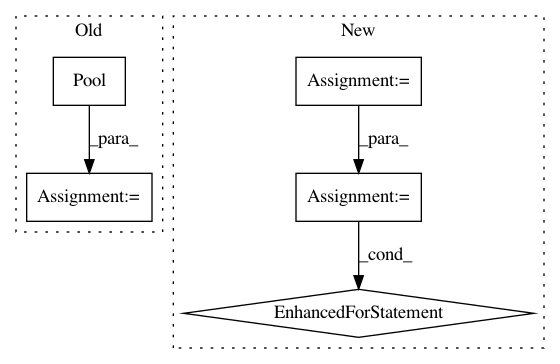

01f7bc646c65e77ccc10faab07662b5d2eb76e86,ilastik/workflows/voxelSegmentation/utils.py,,slic_to_mask,#Any#Any#,59
Before Change
slice_out[slice_ == i, :] = v[:]
return slice_out
pool = multiprocessing.Pool(num_cores * 4)
slices_out = pool.map(compute, slices)
pool.close()
return np.concatenate(slices_out)
After Change
@timeit
def slic_to_mask(slic_segmentation, supervoxel_values):
num_workers = Request.global_thread_pool.num_workers
slices = np.array_split(slic_segmentation, num_workers)
slices_out = []
@timeit
def compute(slice_):
nonlocal slices_out
shape = slice_.shape + (supervoxel_values.shape[-1],)
slice_out = np.zeros(shape, dtype=supervoxel_values.dtype)
for (i, v) in enumerate(supervoxel_values):
slice_out[slice_ == i, :] = v[:]
slices_out.append(slice_out)
// pool = RequestPool
for _slice in slices:
// pool.add(Request(partial(compute, _slice)))
compute(_slice)
// pool.wait()
return np.concatenate(slices_out)
In pattern: SUPERPATTERN
Frequency: 3
Non-data size: 5
Instances
Project Name: ilastik/ilastik
Commit Name: 01f7bc646c65e77ccc10faab07662b5d2eb76e86
Time: 2020-02-19
Author: k-dominik@users.noreply.github.com
File Name: ilastik/workflows/voxelSegmentation/utils.py
Class Name:
Method Name: slic_to_mask
Project Name: deepchem/deepchem
Commit Name: 3b3a06ad8402079c2d18718349d5f0f212ac7b81
Time: 2020-12-11
Author: nfrey213@gmail.com
File Name: deepchem/feat/base_classes.py
Class Name: ComplexFeaturizer
Method Name: featurize
Project Name: ilastik/ilastik
Commit Name: 01f7bc646c65e77ccc10faab07662b5d2eb76e86
Time: 2020-02-19
Author: k-dominik@users.noreply.github.com
File Name: ilastik/workflows/voxelSegmentation/opVoxelSegmentation.py
Class Name: OpSupervoxelFeaturesAndLabels
Method Name: computeSupervoxelLabels